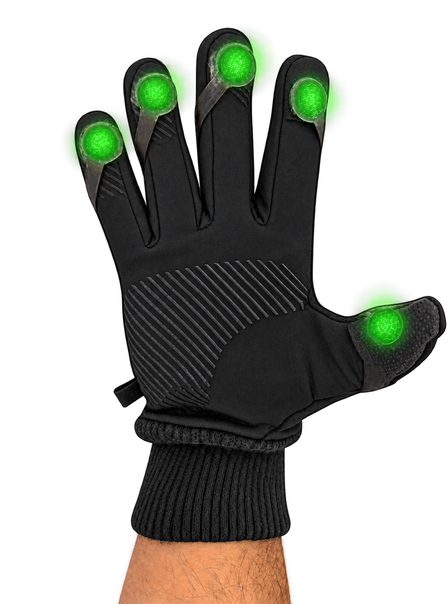
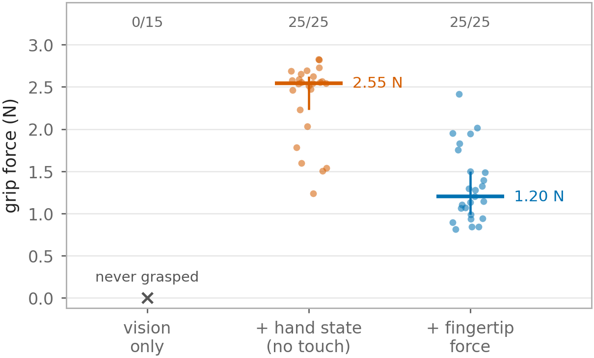
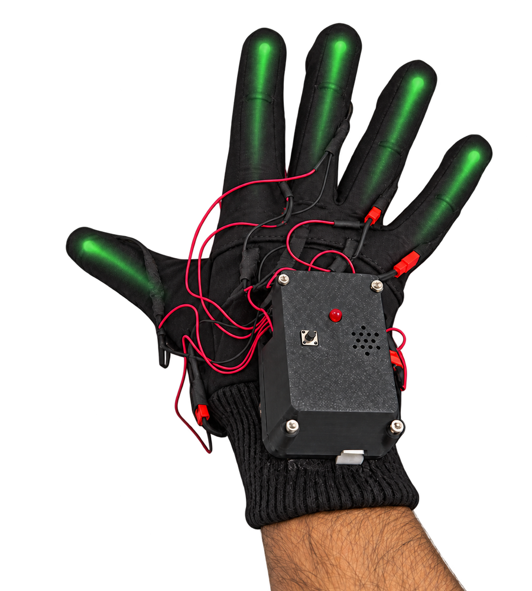
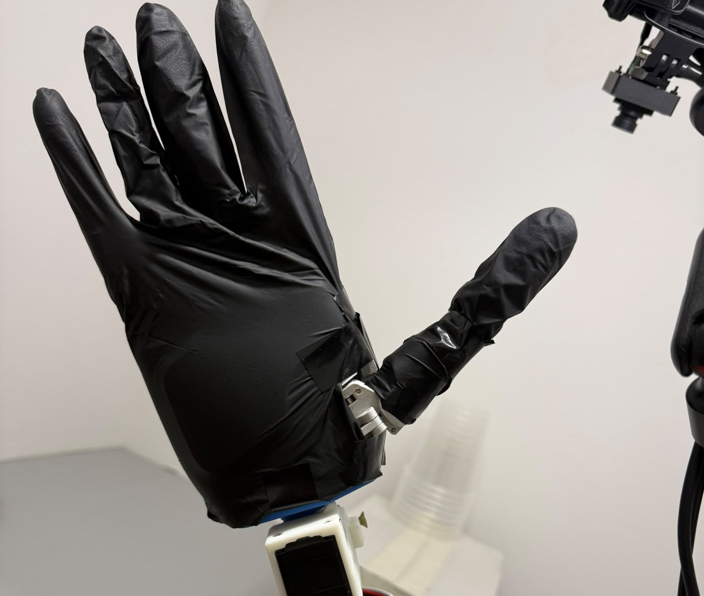

New paper · September 2026
Human-to-robot skill transfer across the embodiment gap: no shared sensor, no robot in the loop. A robot hand with no tactile sensors learns to hold a cup gently.

50 pre-registered rollouts on a real robot hand, 25 per policy, one session. Grip force is estimated from the hand's motor current, the same instrument for both policies. One-sided Mann-Whitney p < 0.0001.
Both policies hold the cup every time. The one without force squeezes more than twice as hard, because nothing it observes tells it when the grip is enough. Extra force buys no extra success; on fragile objects it is how things get crushed.
Same demonstrations, same policy recipe, same robot. Only the input differs. Head-camera view.
How the force gets from the glove to a robot with no sensors is in the paper.



73 demonstration sessions, 38,150 frames, recorded with no robot present.
Limits. One object, one position, a fixed arm path; the policy controls the hand only. Force values come from a motor-current estimate: good for comparing the two policies, approximate in absolute newtons, and saturating near 5 N.
Force-aware human-to-robot skill transfer from a wearable sensing glove to a robot hand without tactile sensors. Seven pages, five figures.